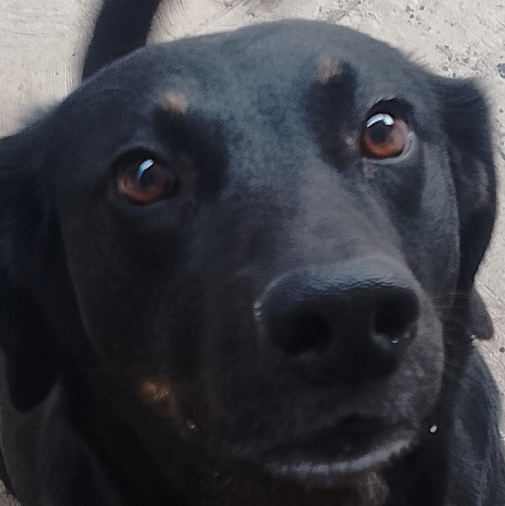

Yo soy nacido en la Ciudad de Mexico, a los tres años me mude para Puebla, ahi curse todo mi Kinder, sufri una fractura en 3ro de Kinder del femur derecho.
Despues me mude para Queretaro y ahi curse parte de mi primaria antes de volver a mudarme a Puebla... de nuevo,por ultimo, me volvi a mudar para Queretaro y actualmente estoy cursando la preparatoria y pues es un poco de mi vida.
Mis logros
Los logros que he logrado para mi son los diplomas que he conseguido durante todo el tiempo que llevo estudiando, estos diplomas por buen promedio, tambien creo yo el poder hacer una revista desde 0 yo solo que pueden verla en el siguiente enlace (https://www.canva.com/design/DAGW8CRjwpA/LHwlP0I2c7FW-KqQouQ11w/edit?utm_content=DAGW8CRjwpA&utm_campaign=designshare&utm_medium=link2&utm_source=sharebutton) o en el qr de la imagen y pues basicamente no he tenido muchos logros creo yoo
Proyectos cumplidos
Los proyectos que he cumplido para mi son es poder entrar a una preparatoria como el CBTis 1118 ya que es una preparatoria con alto prestigio por lo que me han comentado muchas personas que conozco y han salido exitosos
Metas y aspiraciones
Las Metas que yo tengo para mi futuro es poder hacer una carrera de ingenieria aeroespacial o una ingenieria que tenga que ver con la carrera tecnica que estoy cursando en la prepa que es Mecanica Industrial
Lecciones de vida
Las lecciones que he aprendido sin duda es que la gente cambia y con ellos sus acciones, debemos de ser buenos con todos a pesar de sus actos porque a veces las personas son asi por su pasado o infancia y debemos de aprender a no juzgar o intentar cambiar la forma de ser de las personas porque asi tu mismo te haras daño. Tambien he aprendido a nunca darme por vencido y siempre hacer lo mejor de mi SIEMPRE.
